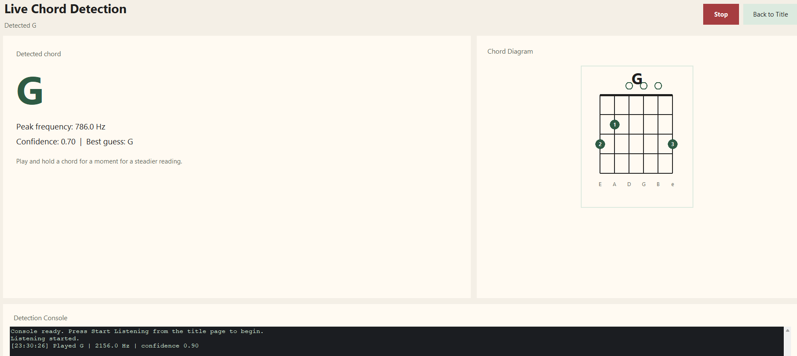
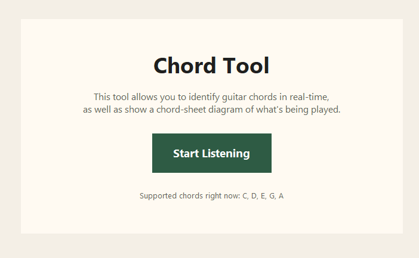

Welcome to my portfolio!
This is a desktop application created using Python that listens to a live microphone input, recognises a supported set of guitar chords and outputs the correct chord though an interface. This is achieved using background threading and queue-based communication to keep the interface responsive during the audio analysis.
How it works:
The application records live guitar audio through a microphone using PyAudio. The microphone sends raw data to the program in short repeated chunks. This allows the system to analyse incoming sound constantly instead of waiting for a full recording to finish.
The raw data is converted into numerical audio samples using NumPy. These samples represent the changing shape of the sound wave over time and allow the program to process the audio mathematically. The application also calculates a peak-frequency estimate, which is shown to the user as additional live feedback feature.
The numerical samples are analysed using the librosa library to generate a chromagram. A chromagram represents the strength of the twelve pitch classes in the audio signal: C, C#, D, D#, E, F, F#, G, G#, A, A#, and B. This is useful because a chord is defined by a combination of note classes rather than one individual frequency.
Figure 1: Main interface upon launching the software.

Figure 2: Live interface of the software in action.

This PhysX simulation recreates a simple soap box racing ramp.
How it works:
This is a project created with C++ that demonstrates simple physics of a box car crashing into hay bales from the speed of a ramp. The course, guide rails and finish area use static rigid bodies, while the car and each hay bale use individual dynamic rigid bodies. PhysX calculates gravity, friction, momentum and collision responses in real time, allowing the car to travel down the ramp without any engine or direct movement forces.
A kinematic start gate holds the car before release, then moves out of the way to begin the run. At the finish line, the car collides with a stacked barrier of separate hay bale bodies. Because every bale has its own mass, material and collision behaviour, the structure shifts and collapses naturally from the impact rather than using a pre-made animation.